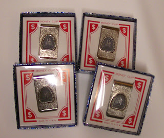

Happy Birthday NAAV
1/15/2010
{kind=link}

January 15 is the birth date of the NAAV, although the exact year is a bit elusive. One document Mrs. Maher provided me indicates the year of registration as 1944. However, another seems to point to 194o as the initial year with 1944 as a renewal. The organisation was disbanded in 2004 so whether it was 60 or 64 years, the NAAV provided support and service to ventriloquists around the world through several generations. Today, with ventriloquists so well connected around the world, to be successful, a similar type of organization would need to be International in both name and policy. But for those pre-Internet years, the NAAV provided a valuable service.
In the early '70s we offered to members a variety of items featuring the NAAV logo. I still have a few of those items and today I will give away four NAAV money clips, unused, still in their original boxes, and the winners are: Lila Shaw, David Turner, Bob May, and Abhijeet Deshpande. You must Contact Me to confirm your address and claim your gift. Thank you.